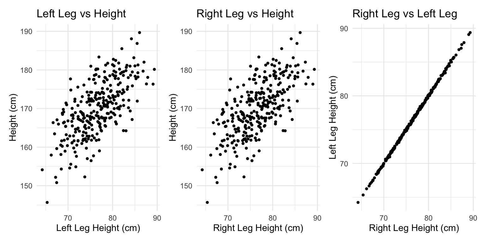
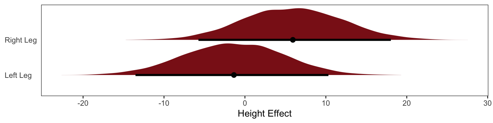
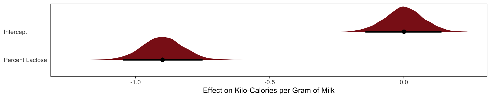
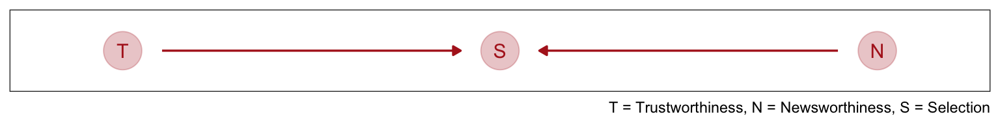
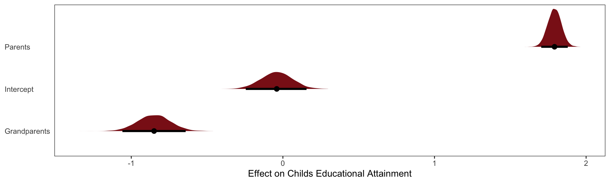
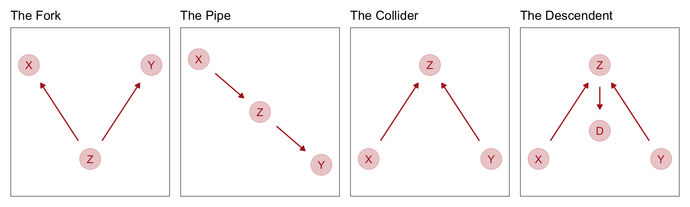

Causal Terror Intro
“The more likely it is to kill you, if true, the less likely it is to be true. The more boring the topic, the more rigorous the results. How could this widely believed negative correlation exist? There doesn’t seem to be any reason for studies of topics that people care about to produce less reliable results. Maybe popular topics attract more and worse researchers, like flies drawn to the smell of honey? Actually all that is necessary for such a negative correlation to arise is that peer reviewers care about both newsworthiness and trustworthiness.”
Multiple regression is plagued with “paradoxes” that happen when we condition (like conditioning on publication status) on some variables in our regression. In this chapter we’ll go over three problems with regressing on additional variables: multicollinearity, post-treatment bias, and collider bias.
Multicollinearity
Multicollinearity means very strong correlation between two or more predictor variables. The consequence of it is that the posterior distribution will seem to suggest that none of the variables is reliably associated with the outcome, even if all of the variables are in reality strongly associated with the outcome. In fact, there is nothing wrong with multicollinearity. The model will work fine for prediction, it just frustrates most peoples intuitive understanding of what multi regression does.
Left leg predicts height but right leg doesn’t?

\[\text{Height}_i = \text{Normal}(\mu_i, \sigma)\]
\[\mu_i = \alpha + \beta_\text{1}\text{Left Leg Z}_i + \beta_\text{2}\text{Right Leg Z}_i\] \[\alpha = \text{Normal}(170, 10)\]
\[\beta_i = \text{Normal}(0, 3)\] \[\sigma = \text{Exponential}(3)\]


The posterior distribution for these two parameters is very highly correlated, with all of the plausible values of \(\beta_\text{left}\) and \(\beta_\text{right}\) lying along a narrow ridge.
One way to think of this phenomenon is that you have approximated this model:
\[ y_i \sim \text{Normal}(\mu_i, \sigma) \]
\[ \mu_i = \alpha + \beta_1x_i + \beta_2x_i \]
The variable y is the outcome, like height in the example, and x is a single predictor, like the leg lengths in the example. Here x is used twice, which is a perfect example of the problem caused by using the almost-identical leg lengths. From the computer’s perspective, this model is simply:
\[ \mu_i = \alpha + (\beta_1 + \beta_2)x_i \]
When two predictor variables are very strongly correlated, including both in a model may lead to confusion. The posterior distribution isn’t wrong, in such cases. It’s telling you that the question you asked cannot be answered with these data. And that’s a great thing for a model to say, that it cannot answer your question. And if you are just interested in prediction, you’ll find that this leg model makes fine predictions. It just doesn’t make any claims about which leg is more important.
Milk Example
Using the milk primate data from the last chapter
\[\mu_\text{milk} = \alpha + \beta_F\text{Fat Percent}_i\]
\[\mu_\text{milk} = \alpha + \beta_L\text{Lactose Percent}_i\]

The posterior distributions for \(\beta_\text{fat}\) and \(\beta_\text{lactose}\) are essentially mirror images of one another. The posterior mean of \(\beta_\text{fat}\) is as positive as the mean of \(\beta_\text{lactose}\) is negative. Both are narrow posterior distributions that lie almost entirely on one side or the other of zero. Given the strong associ- ation of each predictor with the outcome, we might conclude that both variables are reliable predictors of total energy in milk, across species. The more fat, the more kilocalories in the milk. The more lactose, the fewer kilocalories in milk. But watch what happens when we place both predictor variables in the same regression model:

Now the posterior means of both \(\beta_\text{fat}\) and \(\beta_\text{lactose}\) are closer to zero. And the standard deviations for both parameters are twice as large as in the bivariate models.
What has happened is that the variables perc.fat and perc.lactose contain much of the same information.
In the scientific literature, you might encounter a variety of dodgy ways of coping with multicollinearity. Few of them take a causal perspective. Some fields actually teach students to inspect pairwise correlations before fitting a model, to identify and drop highly correlated predictors. This is a mistake. Pairwise correlations are not the problem. It is the conditional associations—not correlations—that matter. And even then, the right thing to do will depend upon what is causing the collinearity. The associations within the data alone are not enough to decide what to do.
What is likely going on in the milk example is that there is a core tradeoff in milk com- position that mammal mothers must obey. If a species nurses often, then the milk tends to be watery and low in energy. Such milk is high in sugar (lactose). If instead a species nurses rarely, in short bouts, then the milk needs to be higher in energy. Such milk is very high in fat. This implies a causal model something like this:
The central tradeoff decides how dense, D, the milk needs to be. We haven’t observed this variable. Then fat, F, and lactose, L, are determined. Finally, the composition of F and L determines the kilocalories, K. If we could measure D, or had an evolutionary and economic model to predict it based upon other aspects of a species, that would be better than stumbling through regressions. We’d just regress K on D, ignoring the mediating L and F, to estimate the causal influence of density on energy.
Nature does not owe us easy inference, even when the model is correct.
Post-treatment bias
We often omit variables when we shouldn’t less rare is the mistaken inferences arisen from including variables, we call this post-treatment bias.
The language “post-treatment” comes in fact from thinking about experimental designs. Suppose for example that you are growing some plants in a greenhouse. You want to know the difference in growth under different anti-fungal soil treatments, because fungus on the plants tends to reduce their growth. Plants are initially seeded and sprout. Their heights are measured. Then different soil treatments are applied. Final measures are the height of the plant and the presence of fungus. There are four variables of interest here: initial height, final height, treatment, and presence of fungus. Final height is the outcome of interest. But which of the other variables should be in the model? If your goal is to make a causal inference about the treatment, you shouldn’t include the presence of fungus, because it is a post-treatment effect.
It’s easier to imagine the priors when we think of the final height as a porportion of their initial height
\[ \text{Final Height}_i \sim \text{Normal}(\mu_i, \sigma) \]
\[\mu_i = \text{Initial Height}_i \times p \] If p = 1, the plant hasn’t changed at all from time t = 0 to time t = 1. If p = 2, it has doubled in height. So if we center our prior for p on 1, that implies an expectation of no change in height.
\[ p \sim \text{Log-Normal(0, 0.25)}\]
Cool so about 40% growth on average.
Adding Covariates
\[ \text{Final Height}_i \sim \text{Normal}(\mu_i, \sigma) \]
\[\mu_i = \text{Initial Height}_i \times p \]
\[ p = \alpha + \beta_T\text{Treatment}_i + \beta_F\text{Fungus}_i \]
\[ \alpha \sim \text{Log-Normal(0, 0.25)} \]
\[ \beta_T \sim \text{Normal(0, 0.5)} \] \[ \beta_F \sim \text{Normal(0, 0.5)} \]
\[ \sigma \sim \text{Exponential(1)} \]
The proportion of growth \(p\) is now a function of the predictor variables
The \(\alpha\) parameter is the same as p before. And it has nearly the same posterior. The marginal posterior for \(\beta_\text{Treatment}\), the effect of treatment, is solidly zero, with a tight interval. The problem is that fungus is mostly a consequence of treatment. To actually answer our research question of the effect of treatment we must omit the fungus variable.
like such:
\[ \text{Final Height}_i \sim \text{Normal}(\mu_i, \sigma) \]
\[\mu_i = \text{Initial Height}_i \times p \]
\[ p = \alpha + \beta_T\text{Treatment}_i\]
The rest of the model is the same as above

Here our treatment effect does solidly increase the height of the plant by 3% - 17%.
Looking at the DAG
As the DAG helps us see once we control for fungus we are cutting off all of it’s influences (AKA the treatments entire influence here). There is no information in T about H1 that is not also in F.
Collider Bias
Going back to our intro on the the most newsworthy science papers being the less trustworthy we can represent the causal model like this.

This is a collider structure, trustworthiness and newsworthiness are statistically associated when looking at S but they are not causally associated. Once you learn that a paper has been selected (S), then learning its trustworthiness (T) also provides information about its newsworthiness (N). Otherwise it wouldn’t have been funded. Why? Because if, for example, a selected proposal has low trustworthiness, then it must have high newsworthiness.
We can make another collider causal model by thinking that both Happiness levels and Age cause one to get married.
Even though there is no causal association between happiness and age, if we condition on marriage (i.e. include it as a predictor in a regression) then we will have a statistical association between age and happiness.
Consider only the blue points, the married people. Among only the blue points, older individuals have lower average happiness. This is because more people get marriage at time goes on, so the mean happiness among married people approaches the population average of zero. Now consider only the open points, the unmarried people. Here it is also true that mean happiness declines with age. This is because happier individuals migrate over time into the married sub-population. So in both the married and unmarried sub-populations, there is a negative relationship between age and happiness. But in neither sub-population does this accurately reflect causation.
If we came across this data and want to ask whether age is related to happiness. You don’t know the true causal model. But you reason, that marriage status might be an important confound. If married people are more or less happy, on average, then you need to condition on marriage status in order to infer the relationship between age and happiness.
You’re regression model would look like:
\[\mu_\text{Happiness for individual i} = \alpha_\text{Marriage Status Intercept} + \beta_AA_i\]

The model is quite sure that age is associated with happiness. What if we omit marital status
\[ \mu_\text{Happiness for individual i} = \alpha + \beta_A\text{Age}_i \]
This exactly what we’d expect to see when we condition on a collider, if we conditioned on it we’d see a spurious associateion between the two causes.
The Haunted DAG
Collider bias can arise from unobserved variables. Suppose we want to find the direct influence of both parents (\(P\)) and grandparents (\(G\)) on the educational achievements of children (\(C\)). Since grandparents also presumably influence their own children’s education there is an arrow \(G \rightarrow P\).
But suppose there are unmeasured, common influences on parents and their children, such as neighborhoods, that are not shared by grandparents (who live on the south coast of Spain now). Then our DAG becomes haunted by the unobserved U:
Now \(P\) is a common consequence of \(G\) and \(U\), so if we condition on \(P\), it will bias inference about \(G \rightarrow C\), even if we never get to measure \(U\). This isn’t immediately obvious, so let’s crawl through a quantitative example.
For this example we’re going to say that Grandparents \(G\) have no direct effect on grandkids \(C\). The example doesn’t depend upon that effect being exactly zero, but it will make the lesson clearer.
Now what happens when we try to infer the influence of grandparents? Since some of the total effect of grandparents passes through parents, we realize we need to control for parents. Our regression looks like
\[ \mu_\text{children} = \alpha + \beta_G\text{Grandparents} + \beta_P\text{Parents} \]

The inferred effect of parents looks too big, almost twice as large as it should be. That isn’t surprising. Some of the correlation between \(P\) and \(C\) is due to \(U\), and the model doesn’t know about \(U\). That’s a simple confound. More surprising is that the model is confident that the direct effect of grandparents is to hurt their grandkids. The regression is not wrong. But a causal interpretation of that association would be.
So how does the negative association arise, when we condition on parents? Conditioning on parents is like looking within sub-populations of parents with similar education. So let’s try that. In Figure 6.5, I’ve highlighted in filled points those parents between the 45th and 60th centiles of education. There is nothing special of this range. It just makes the phenomenon easier to see. Now if we draw a regression line through only these points, regressing \(C\) on \(G\), the slope is negative. There is the negative association that our multiple regression finds. But why does it exist?
It exists because, once we know \(P\), learning \(G\) invisibly tells us about the neighborhood \(U\), and \(U\) is associated with the outcome \(C\). I know this is confusing. As I keep saying, if you are confused, it is only because you are paying attention. So consider two different parents with the same education level, say for example at the median 50th centile. One of these parents has a highly educated grandparent. The other has a poorly educated grandparent. The only probable way, in this example, for these parents to have the same education is if they live in different types of neighborhoods. We can’t see these neighborhood effects—we haven’t measured them, recall—but the influence of neighborhood is still transmitted to the children \(C\). So for our mythical two parents with the same education, the one with the highly educated grandparent ends up with a less well educated child. The one with the less educated grandparent ends up with the better educated child. \(G\) predicts lower \(C\).
And these are the slopes that we simulated!
Confronting Confounding
Cofounding is when the association between an outcome \(Y\) and a predictor \(X\) is not the same if we had experimentally determined the values of \(X\). For example if we wanted to see if there was an association between education \(E\) and wages \(W\). There are many uobserved variables \(U\) which influence both \(E\) and \(W\), like where they live, who there parents are, and who are their friends.
If we regress \(W\) on \(E\) the estimate of the causal effect will be confounded by \(U\). It is confounded, because there are two paths connecting \(E\) and \(W\): (1) \(E \rightarrow W\) and (2) \(E \leftarrow U \rightarrow W\). A “path” here just means any series of variables you could walk through to get from one variable to another, ignoring the directions of the arrows. Both of these paths create a statistical association between \(E\) and \(W\). But only the first path is causal. The second path is non-causal. Why? Because if only the second path existed, and we changed \(E\), it would not change \(W\). Any causal influence of \(E\) on \(W\) operates only on the first path.
We normally address this by running an experiment where we assign the education level at random. This cuts off the influence of \(U\) on \(E\):
Four Fundamental DAGS

- The first type of relation is the one we worked with just above,a fork:\(X /leftarrow Z \rightarrow Y\). This is the classic confounder. In a fork, some variable \(Z\) is a common cause of \(X\) and \(Y\), generating a correlation between them. If we condition on \(Z\), then learning \(X\) tells us nothing about \(Y\). \(X\) and \(Y\) are independent, conditional on \(Z\).
- The second type of relation is a pipe: \(X \rightarrow Z \rightarrow Y\). We saw this when we discussed the plant growth example and post-treatment bias: The treatment X influences fungus \(Z\) which influences growth \(Y\). If we condition on \(Z\) now, we also block the path from \(X\) to \(Y\). So in both a fork and a pipe, conditioning of the middle variable blocks the path.
- The third type of relation is a collider: \(X \rightarrow Z \leftarrow Y\). You met colliders earlier in this chapter. Unlike the other two types of relations, in a collider there is no association between \(X\) and \(Y\) unless you condition on \(Z\). Conditioning on \(Z\), the collider variable, opens the path. Once the path is open, information flows between \(X\) and \(Y\).
- The fourth bit of knowledge you need is that conditioning on a descendent variable is like conditioning on the variable itself, but weaker. A descendent is a variable influenced by another variable. Controlling for \(D\) will also control, to a lesser extent, for \(Z\). The reason is that \(D\) has some information about \(Z\). This will (partially) open the path from \(X\) to \(Y\), because \(Z\) is a collider. The same holds for non-colliders. If you condition on a descendent of Z in the pipe, it’ll still be like (weakly) closing the pipe.